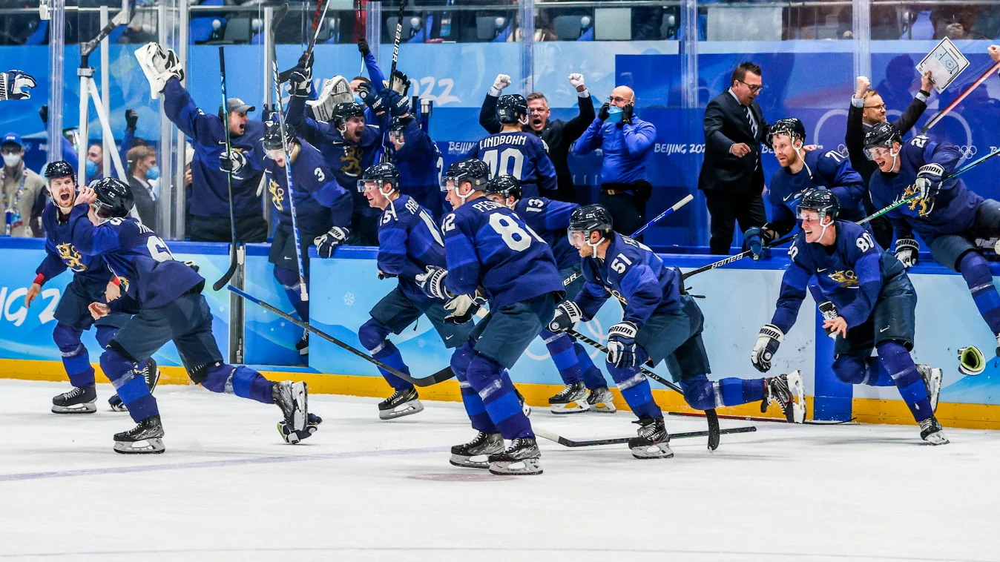
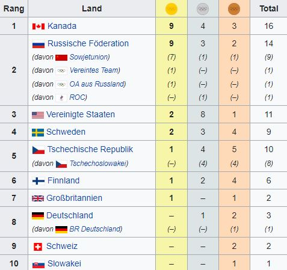

Finnland schreibt im Eishockey Sportgeschichte

Finnland gewinnt erstmals Olympia-Gold im Eishockey.
Nach dem 2:1 im Finale gegen Russland
feiern die Menschen in Helsinki
den Triumph der Unbesiegten, die erst einmal einen Schreckmoment
verdauen mussten.
Durch die Treffer von Ville Pokka (28. Spielminute), der die frühe russische
Führung
durch Michail Grigorenko (8.) ausglich, und Hannes Björninen (41.) blieben sie auch
im siebten
Turnierspiel unbesiegt und sicherten sich nach zweimal Silber und viermal Bronze
erstmals die Goldmedaille. Danach ließen die für ihre Disziplin auf dem Eis berühmten Nordmänner
jede Contenance fahren. Stürmer Harri Pesonen sank auf die Knie und sah glückselig zum 2,03 Meter
großen Marko Anttila auf, Finnlands Weltmeister-Kapitän von 2019, der in Peking nach einem positiven
Corona-Test erst einmal für sechs Tage in Isolation verschwunden war. "Ich habe darüber nachgedacht,
wie es sich anfühlen würde, etwas nach der Quarantäne zu gewinnen", erzählte der 36-Jährige.

Zurück zur Startseite